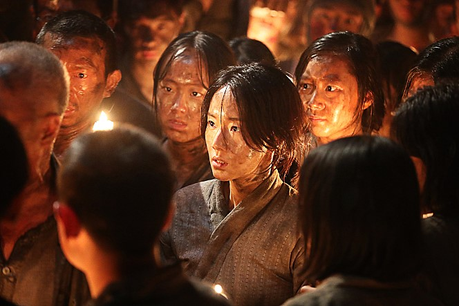

2017년 7월 26일, 사람들의 기대 속에 군함도가 개봉했다. 황정민, 소지섭, 송중기, 이정현 등의 초호화 캐스팅, 영화 '베테랑'의 류승완 감독이 가져오는 티켓파워는 무시할 수가 없었다. 개봉 4일 만에 300만 명을 동원했고, 이는 '명량'의 흥행과 같은 속도였다. 하지만 1주일 만에 관객 수는 급속도로 줄어들었고, 개봉 전 8.59였던 평점은 5.28로 곤두박질 쳤다. 끝내 영화는 최종스코어 659만 명으로 손익분기점을 넘기지 못했다. 영화 내의 역사왜곡 논란이 발목을 붙잡은 것이다.
포털사이트 리뷰 속에서 영화에 대한 관객들의 불편함을 찾을 수 있었다. 관객들은 일제강점기의 군함도를 다룬 ‘역사영화’를 기대했지만 영화는 기대를 외면했다. 사실의 고증은 없고 액션만 있었다는 것이다. 누리꾼들은 ‘이게 무슨 역사영화냐 그냥 액션 영화지’, ‘블록버스터 영화의 배경이 군함도에 불과한 거네.’ 등의 반응을 보였다. 영화와 관련하여 군함도를 주제로 역사 강의를 진행했던 최태성 강사도 개인 SNS에 비슷한 의견을 피력했다.
“군함도의 강제 징용을 다룬 역사영화라고만 생각을 했는데... 그건 제 ‘군함도’ 해설 강의까지구요. 실제론 어마어마한 초대형 블록버스터급 ‘탈출’ 영화이고, 군함도가 배경이 되는 듯 합니다.”
그나마 다루었던 역사적인 사실도 역사왜곡 논란에서 자유롭지 못했다. 조선인들의 강제징용을 친일파들이 도왔다는 줄거리가 논란의 도마에 오른 것이다. 일부 관객들에게는 영화 속 일본인과 손을 잡고 조선인을 팔아먹는 친일파 ‘윤학철(이경영)’의 존재가 매우 불편하게 다가왔다. 강제징용에 대한 책임이 일본인 뿐만 아니라 조선인에게도 있는 것처럼 느껴지기 때문이다. 극 중 ‘중국에서 도망쳐 일본으로 잡혀 올 때도 조선인들에 속아서였다.’는 오말년(이정현)의 대사는 조선 사람들이 더 나쁘다는 것을 드러내려 하는 것 같다는 느낌까지 들게 한다.